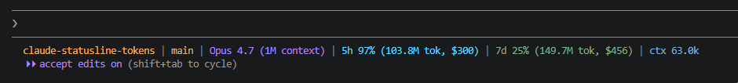

A Claude Code status line
Anthropic's hook injects rate-limit percentages.
This script adds the numbers underneath —
raw tokens and pay-per-token cost for your rolling 5-hour
and 7-day windows, summed from your transcripts and priced at API rates.
Claude Code injects rate-limit percentages but no raw token counts. Popular status-line packages render the windows as just percentages — useful for "am I about to throttle", silent on "what is this session costing me".
| feature | default statusline | claude-powerline | statusline-tokens |
|---|---|---|---|
| 5h / 7d window % | — | ● yes | ● yes |
| raw token totals (5h / 7d) | — | — | ● yes |
| pay-per-token cost ($) | — | — | ● yes |
| ephemeral cache pricing (5m / 1h) | — | — | ● yes |
| per-turn context tokens | — | ● yes | ● yes |
| runtime dependency | ● none | ● node | ● single .ps1 |
Six segments, each a different signal, each its own ANSI 256-color index. Read it like a dashboard.

| segment | sample output | derivation | ansi |
|---|---|---|---|
| working dir | claude-statusline-tokens | workspace.current_dir · Split-Path -Leaf |
215 |
| git branch | main | git rev-parse --abbrev-ref HEAD |
180 |
| model | Opus 4.7 (1M context) | model.display_name from hook |
141 |
| 5h window | 97% (103.8M tok, $300) | native rate_limits.five_hour + transcript scan · API-rate cost |
81 |
| 7d window | 25% (149.7M tok, $456) | native rate_limits.seven_day + transcript scan · API-rate cost |
108 |
| context | 63.0k | last usage block in this session's transcript |
110 |
Two files, one restart. Works in Windows Terminal, VS Code's integrated terminal, and any 256-color ANSI host.
Into %USERPROFILE%\.claude\, alongside your settings.json.
# PowerShell Copy-Item statusline-tokens.ps1 ` "$env:USERPROFILE\.claude\"
Add (or replace) the statusLine block.
{
"statusLine": {
"type": "command",
"command": "powershell -NoProfile
-ExecutionPolicy Bypass
-File "%USERPROFILE%\\.claude
\\statusline-tokens.ps1"",
"padding": 0
}
}
Or start a new conversation. The bar appears on the next prompt cycle. No daemon, no service, no node.
// expected first-render: [cold] ~1.0s // PS startup + scan [warm] ~0.3s // cached, <20s old
For every .jsonl line that carries a
"usage" block in ~/.claude/projects/**/*,
the script applies the following procedure:
The percentages are not computed locally; they come straight
from rate_limits.five_hour.used_percentage and its
7-day sibling — the same authoritative numbers Claude Code uses
internally for throttling decisions.
The token totals beneath them are summed locally, exactly
the way ccusage does it: a recursive scan of every
transcript, regex-extracted, deduplicated by message.id,
windowed by ISO timestamp.
Cost is then computed per-turn, using the actual model family detected on that transcript line — Opus, Sonnet, or Haiku — and the right input / output / cache-read / cache-write rates. Ephemeral cache creation is billed at the 5-minute rate when the breakdown isn't exposed (the API default for unflagged blocks, and the cheaper of the two tiers).
ConvertFrom-Json per line on a 20MB transcript pile.
A 20-second JSON cache keeps the bar snappy on every re-render.